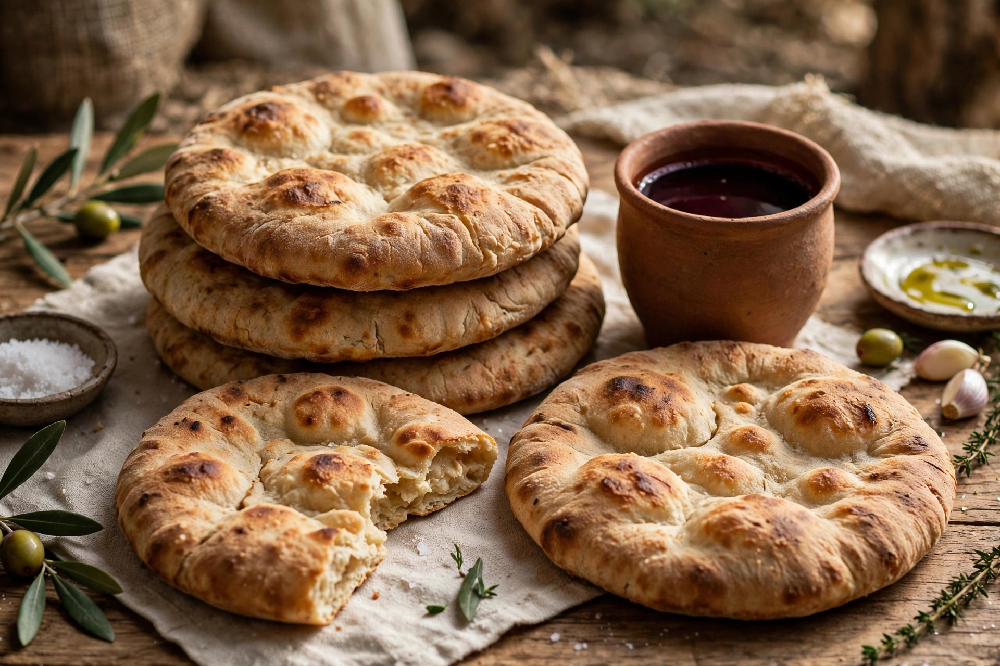

A ordenança da Ceia do Senhor, instituída por Cristo na noite em que foi entregue, carrega no texto grego original uma clareza linguística que devasta qualquer tentativa de misticismo ontológico. Em 1 Coríntios 11:24-25, o apóstolo Paulo registra a ordem explícita do Redentor: "touto poieite eis tēn emēn anamnesin" (τοῦτο ποιεῖτε εἰς τὴν ἐμὴν ἀνάμνησιν) — "fazei isto em memória de mim".
O termo grego ἀνάμνησις (anamnesis) não significa um ato magístico de reatualização física ou sacrificada, mas um ato de recordação solene e aliança ativa. O verbo estin (ἐστίν — "é") na declaração de Jesus: "touto estin to sōma mou" ("isto é o meu corpo") possui uso metafórico explícito e natural na semântica semítica, idêntico a dizer "Eu sou a porta" (Jo 10:9) ou "Eu sou a videira verdadeira" (Jo 15:1). Cristo não estava afirmando que o pão em Suas mãos havia se tornado fisicamente Sua carne, pois Seu próprio corpo físico segurava o pão intacto à mesa.
A Ceia é uma proclamação memorial e profética. O apóstolo enfatiza em 1 Coríntios 11:26 que o ato anuncia (katangellete — καταγγέλλετε, "proclamar verbalmente e publicamente") a morte do Senhor até que Ele venha. Trata-se do selo da Nova Aliança (Jeremias 31:31; Lucas 22:20), fundamentado na suficiência de uma oferta única consumada na cruz (Hebreus 9:26-28; 10:10-14).
A deturpação da Ceia do Senhor gerou algumas das controvérsias mais violentas e sangrentas da história eclesiástica, afastando gradualmente os fiéis da simplicidade do Evangelho:
A) A Polêmica Medieval e a Transubstanciação (1215 d.C. e 1551 d.C.):
Durante o período carolíngio (século IX), a controvérsia explodiu no debate entre os monges Pascásio Radberto (que defendia a presença física e carnal do corpo de Cristo no pão) e Ratramno de Corbie (que defendia a presença espiritual e memorial). Prevaleceu a superstição de Radberto, culminando no Quarto Concílio de Latrão (1215 d.C.) , sob o papa Inocêncio III, que oficializou a Transubstanciação (conceito construído sobre a filosofia de Aristóteles de que a substância interna muda, enquanto os acidentes externos permanecem). No Concílio de Trento (1551 d.C., Sessão XIII) , a Igreja Romana anematizou qualquer um que negasse que o pão e o vinho se convertem literalmente na carne, sangue, alma e divindade de Cristo. Isso resultou na adoração idolátrica da hóstia (a hóstia monstrança) e no dogma herético da missa como um "sacrifício incruento reiterado", em direta contradição com Hebreus 10:18: "Ora, onde há remissão destes, não há mais oferenda pelo pecado".
B) A Polêmica de Marburg (1529 d.C.) e a Fratura Protestante:
Em outubro de 1529 d.C., no Colóquio de Marburg, promovido para unificar os reformadores, Martinho Lutero e Ulrico Zuínglio protagonizaram um dos debates teológicos mais ferozes da história. Lutero recusou-se a aceitar o memorialismo puro e formulou a Consubstanciação, argumentando que o corpo físico de Cristo coexiste "com, sob e em" a matéria do pão e do vinho (baseado na doutrina da ubiquidade do corpo ressurreto de Cristo). Zuínglio, fundamentado no texto grego, demonstrou que Cristo está presente espiritualmente na fé do crente, e não retido na matéria. A obstinação de Lutero em riscar na mesa a frase latina "Hoc est corpus meum" impediu a união protestante e perpetuou a contaminação mística sobre o sacramento.
Para compreender o escândalo da celebração contemporânea, é indispensável examinar o texto hebraico e grego quanto à natureza dos elementos da Páscoa bíblica, na qual a Ceia foi instituída:
A Proibição Absoluta do Fermento (Êxodo 12:15-20; 13:7):
Em hebraico, a Lei mosaica distingue com precisão o fermento em si — שְׂאֹר (se'or) , o agente levedante — e a massa levedada — חָמֵץ (chametz) . Na instituição da Páscoa e da Festa dos Ázimos (מַצּוֹת - matzot), Deus emitiu uma ordem inequívoca: por sete dias, todo o se'or deveria ser eliminado e varrido de todas as habitações sob pena de extermínio da congregação (Êxodo 12:15). A busca minuciosa pelo fermento (o ritual de Bedikat Chametz) exigia que nem o menor vestígio de levedura permanecesse no território israelita.
A razão teológica é profunda: nas Escrituras, o fermento é a representação inequívoca da decomposição, da corrupção orgânica, do pecado e do orgulho (Levítico 2:11; Mateus 16:6; Lucas 12:1). O sacrifício do Cordeiro sem defeito e sem mancha (Êxodo 12:5; 1 Pedro 1:19) jamais poderia ser representado ou acompanhado por elementos corrompidos pelo fermento.
A Exortação Apostólica (1 Coríntios 5:6-8):
O apóstolo Paulo retoma o mandamento veterotestamentário aplicando-o exageticamente ao contexto do Novo Testamento:
"Não é boa a vossa jactância. Não sabeis que um pouco de fermento (ζύμη - zyme) leveda a massa toda? Purificai-vos, pois, do fermento velho, para que sejais uma nova massa, assim como estais sem fermento (ἄζυμοι - azymoi). Porque Cristo, nossa páscoa, foi sacrificado por nós. Pelo que façamos festa, não com o fermento velho, nem com o fermento da malícia e da maldade, mas com os ázimos (ἀζύμοις - azymois) da sinceridade e da verdade."
— 1 Coríntios 5:6-8
A metáfora apostólica é taxativa: o corpo de Cristo (tanto o corpo físico sacrificado quanto o corpo místico que é a Igreja) é totalmente isento do fermento da corrupção. Usar fermento na Ceia é insubordinação litúrgica e afronta ao simbolismo bíblico da santidade.
À luz do rigor exegético e da história eclesiástica, revela-se a cegueira litúrgica praticada por grandes corporações denominacionais na modernidade:
A) As Assembleias de Deus e Denominações Pentecostais:
Apesar de manterem a postura moralista quanto ao uso do suco de uva não fermentado (o fruto da videira imaculado), cometem uma profunda aberração litúrgica ao servirem pão francês ou de fôrma comum fermentado (chametz) . Introduzem a levedura da corrupção diretamente no elemento que simboliza o corpo imaculado do Senhor Jesus Cristo, violando frontalmente a tipologia da Páscoa e o ensinamento de 1 Coríntios 5:8.
B) O Luteranismo e Denominações Protestantes Tradicionais:
Praticam a inversão da profanação: embora utilizem a óstia ou pão ázimo (sem fermento), servem para a comunidade vinho alcoólico totalmente fermentado. A fermentação alcoólica é fruto direto da ação do fermento sobre o açúcar do fruto da videira, transformando o suco puro em substância levedada e corrompida. Com isso, introduzem o elemento profano da levedura no símbolo do sangue incorruptível do Cordeiro.
Tanto a prática pentecostal quanto a tradicional histórica incidem no mesmo erro grave: a contaminação e a mistura profana do fermento na mesa do Senhor, desfigurando a ordenança apostólica e ignorando a liturgia primária estabelecida por Deus.
E aí? Sua Igreja exerce a Ceia Bíblica?